תמונה לכל אריח שריר
שלושה כיוונים, כל אחד על "יד קדמית" ו"גב רחב", בתוך אריח שבנוי כמו האריחים במסך "בחר תרגיל". לכל כיוון שתי פריסות: תמונה קטנה ליד השם, או אריח גבוה שהתמונה ממלאת. 3 קרדיטים.
נבחר: ב, אריח גבוה - כל 18 השרירים
כל תמונה היא עריכה של אותו גוף בסיס (מלפנים או מאחור), כך שהגוף זהה בכולן ורק השריר משתנה. אירובי: דמות רצה והלב מואר.
פלג גוף עליון
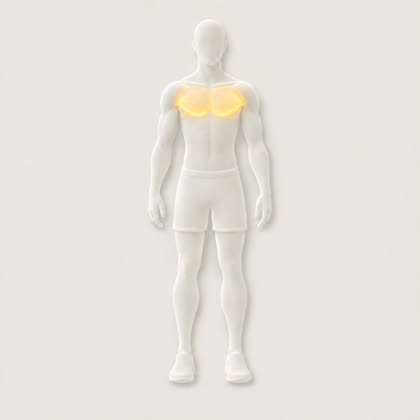

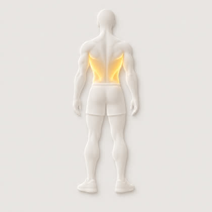
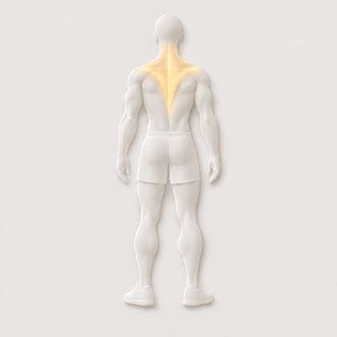
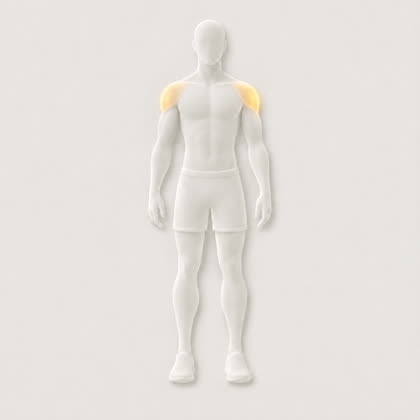
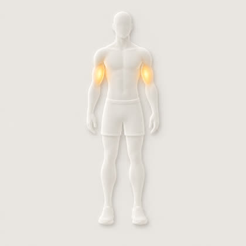
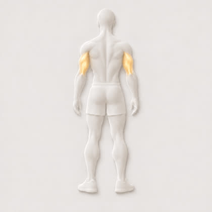
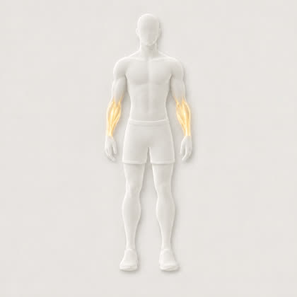
פלג גוף תחתון

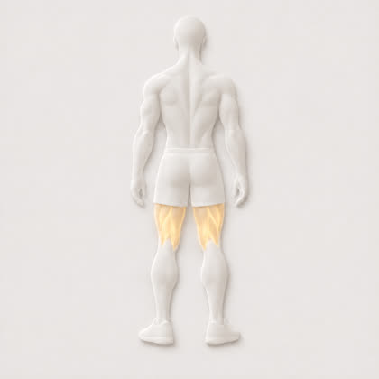
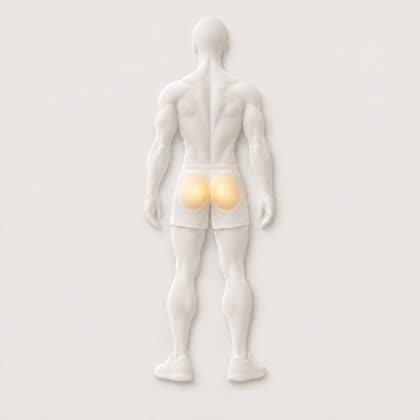
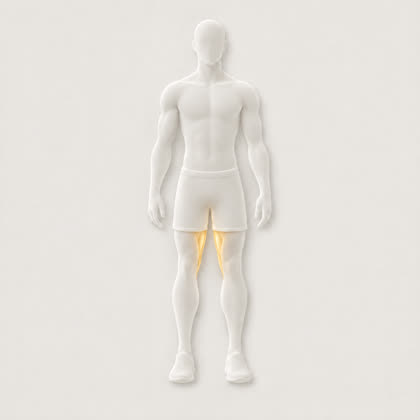
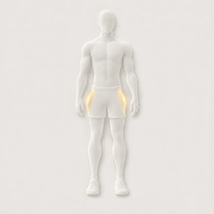

מרכז הגוף ואחר
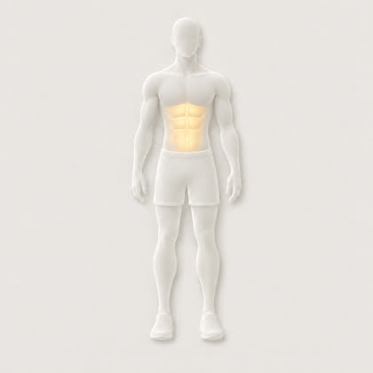

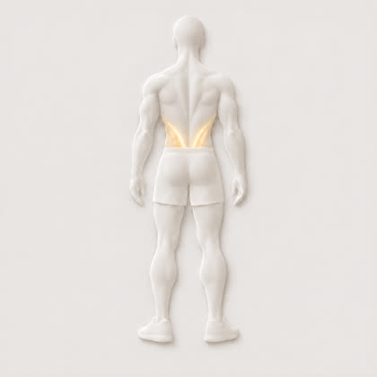

א · הדמות הענברית מההדגמות
אותו גוף כמו בתרגילים (העוגן הקנוני של x106). כתם כהה בתוך אריח בהיר. ל"גב רחב" אין עדיין פריים עם הגב הרחב מואר - מוצגת אותה דמות במלואה, רק להמחשת הפריסה.
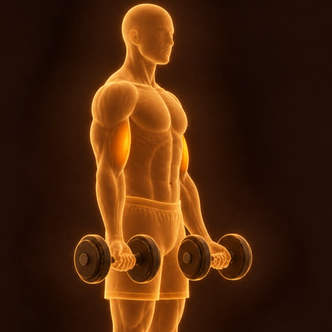
יד קדמית16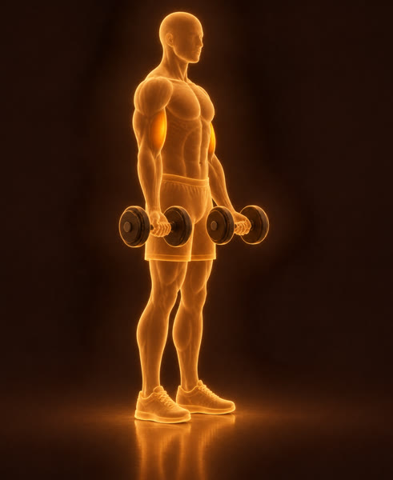
גב רחב14ב · גוף מחומר האפליקציה, השריר מואר מבפנים ההמלצה שלי
צללית לבנה-רכה מוטבעת מהאריח עצמו; הצבע היחיד הוא אור ענבר בשריר. מלפנים ומאחור; באריח הקטן גם חיתוך מקרוב.
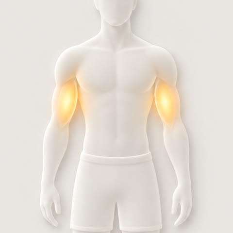
יד קדמית16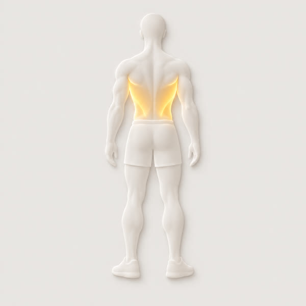
גב רחב14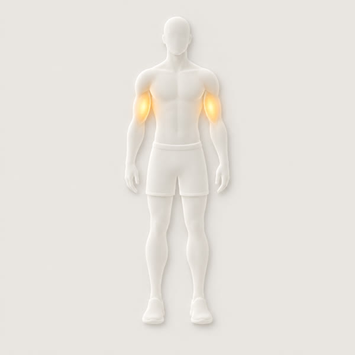
ג · אייקון קווי
קו מתאר דק, השריר ממולא באור ענבר. הכי קריא בקטן, הכי רחוק מההדגמות. נוצר רק מלפנים.
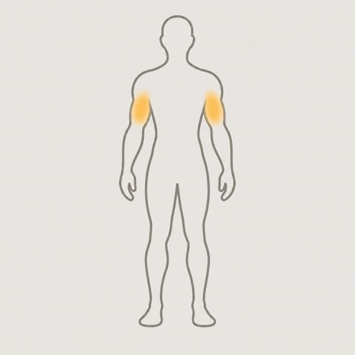
יד קדמית16